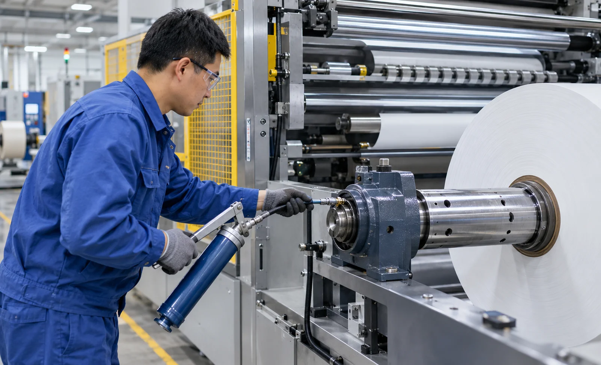
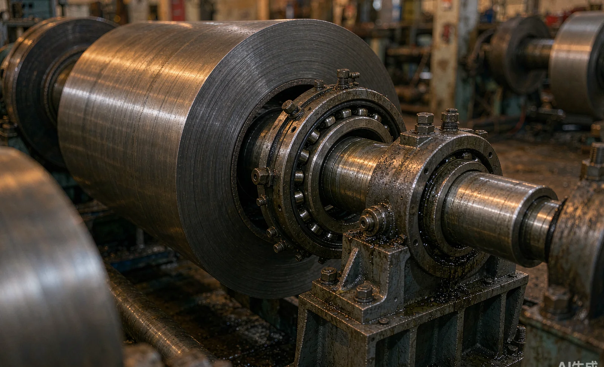

Published October 23, 2026 | By HDPTH Technical Editorial Team

Ask two buyers of nominally identical slitter rewinders what theirs cost to run after five years; the answers often differ threefold. The difference is rarely the knives. It is bearings: housings run dry through a missed schedule, grease wrong for the speed, dust past the seals. A failing rewind bearing drags tension accuracy, roll hardness and shaft alignment down as it degrades.
Why lubrication belongs in the machine specification
Buyers interrogate top speed, knife systems and tension control, then accept “standard bearings, greased per manual” as a closing line. That line decides a large share of lifetime cost: how often production stops for maintenance, how many fitters it consumes, and whether bearings reach their design life or fail at half of it. Most of it is fixed on the builder’s drawing board, so evaluate it before the order, not in the first year of ownership.
Where bearings carry the load: unwind, rewind shafts and load cells
The critical positions differ in duty. Unwind shaft bearings carry full roll weight, with radial load that grows as the roll builds; on larger machines these are typically spherical roller bearings, chosen to tolerate shaft deflection and misalignment. Rewind shaft bearings see continuously changing speed, and their precision translates directly into finished-roll geometry. Idlers and spreader rolls use lighter deep-groove or self-aligning bearings. Load cells deserve special mention: tension transducers sit in the force path, many are maintenance-free apart from verification, and forcing a grease gun at one can shift its zero and corrupt every tension reading downstream. Ask the builder to name bearing type and duty class at each position — a fast proxy for powertrain quality. Our guide to core chuck maintenance covers the chuck interface itself.
Grease specification: type, quantity and interval
A credible manual states three things per point, not one. The grease: most builders specify a lithium or lithium-complex extreme-pressure grease of NLGI 2 consistency, with base oil viscosity matched to speed — commonly ISO VG 100 to 220 for main shaft bearings, thinner for fast idlers. The quantity: bearings die more often from over-greasing than under-greasing — a flooded housing churns, heats and can breach seals; reputable manuals quote grams per point, applied with a metered gun. The interval: typically three to six months for lightly loaded idlers and one to three months for main shaft bearings in continuous production, shorter in hot or dusty plants. If the manual says only “grease regularly”, the programme does not exist yet.
Automatic versus manual lubrication
Manual lubrication works when grease points are accessible and the machine runs one shift. Its weaknesses are human: skipped points behind guards, quantities judged by feel, intervals that slide under production pressure. Automatic systems solve exactly that: a progressive single-line system or injectors meters a small, fixed quantity to each bearing on a controller-driven schedule — suited to wide duplex rewinders and multi-shift duty, at the cost of another system to maintain. The right buyer question is not “automatic or manual?” but “how many grease points, at what quantities and intervals, and which are reachable without removing guards?”
Contamination control: keeping slitting dust out of bearings
Slitting generates a steady stream of fine fibre and film dust, and rotating shafts pump air that carries it inward. Dust in a bearing abrades the raceways and stiffens the grease even when lubrication is otherwise correct. Defence is layered: labyrinth or labyrinth-plus-lip seals on dusty positions, purge or overpressure housings on unwind stands near the slitting section, and dust extraction that captures debris at the knife. Relubrication on schedule is itself a defence — fresh grease displaces the contaminated collar at the seal. Inspect a demo machine’s unwind housings and idler stands: visible dust control there predicts control inside the bearings.

Condition indicators: temperature, vibration and acoustics
A lubrication programme earns its keep when paired with measurement. Temperature is simplest: housings have a normal band recorded at commissioning, and a bearing running persistently above its neighbours is asking for attention. Vibration analysis is the standard predictive tool — velocity spectra reveal bearing defect frequencies weeks in advance, enough lead time to order parts and schedule the stop. Ultrasonic listening gives an earlier, cheaper signal at low speed. Grease inspection closes the loop: used grease that darkens, stiffens or shows metal particles signals a programme-environment fight. Require baselines, not just sensors — commissioning readings become the reference every future measurement is judged against. Our guide to condition monitoring on slitter rewinders covers the instrumentation side in depth.
Lubrication quality as a buyer-evaluation criterion
How a builder handles lubrication predicts how the whole machine was engineered, because it is invisible at the demo and expensive to get wrong later. Does the documentation contain a lubrication chart naming every point, grade, quantity and interval, matching the bearings actually fitted? Is the hardware coherent: seals matched to dust exposure, points reachable without removing guards, automatic lubrication engineered in rather than bolted on? Is support real: grease specification sheets, fitter training, metering equipment in the spares list? A quotation that answers all three in writing comes from a builder who runs machines after delivery.
Preventive maintenance checklist for the lubrication programme
- Lubrication chart posted at the machine: every point, grade, quantity and interval.
- One grease brand and grade in the store; grease guns labelled to match.
- Metered greasing for main shaft bearings — no guessing by stroke count.
- Interval schedule tied to shift hours, reviewed quarterly.
- Seals and purge lines inspected at every relubrication of dusty positions.
- Load cell points serviced strictly per sensor manual — no routine greasing.
- Temperature and vibration baselines recorded at commissioning; drift reviewed monthly.
- Used grease inspected at each service; metal particles trigger a vibration check.
Lubrication sits inside a wider maintenance economy: plan grease stock and replacement bearings alongside our guide to spare parts inventory planning, and see these considerations built into our high-speed slitting machines.
Reviewing lubrication and maintenance before you buy?
Send HDPTH your material, duty cycle and shift pattern. We will document the bearing specification, lubrication chart, seal strategy and optional automatic lubrication for the proposed machine — in the offer, not after delivery.
Submit Your Project InquiryQuestions to put to every vendor
- Which bearing type and duty class is fitted at each unwind, rewind and load cell position?
- What grease grade, quantity and interval does your manual specify, and on what basis?
- How are bearings in the slitting dust zone sealed, and is dust extraction sized for our material?
- Is automatic lubrication available, and what temperature and vibration baselines will you record at commissioning?
Frequently asked questions
How often should bearings on a slitter rewinder be greased?
Follow the builder’s lubrication chart first, because intervals depend on bearing size, speed and temperature. As a planning baseline, lightly loaded idlers are greased every three to six months, main shaft bearings at high duty every one to three months, and load cell points per the sensor manual. Increase frequency for continuous shifts, elevated temperatures or dusty plants.
Which grease should be used on slitter rewinder bearings?
Most builders specify a lithium or lithium-complex EP grease of NLGI 2 consistency with base oil viscosity matched to shaft speed, commonly ISO VG 100 to 220 for main shaft bearings. What matters is a documented specification, consistency of brand and grade, and never mixing thickener types. High-temperature or food-grade variants are chosen where the environment demands it.
Is an automatic lubrication system worth specifying on a slitter rewinder?
For multi-shift production it usually pays back: a progressive single-line or injector system meters small quantities on a schedule and removes the dependency on operators reaching guarded points. For single-shift plants with accessible grease points, a manual programme with a metered gun is adequate. Ask for a point list with quantities and intervals either way.
How does slitting dust get into bearings and what stops it?
Fine fibres and film dust drawn into seals by rotation and airflow abrade the raceways and stiffen the grease. Defences are labyrinth or labyrinth-plus-lip seals, purge or overpressure housings in dusty zones, effective dust extraction near the slitting section, and relubrication on schedule so fresh grease pushes contaminants out.
What condition indicators show a bearing is failing?
Watch four signals together: housing temperature rising above the machine’s normal band, vibration spectra showing bearing defect frequencies, ultrasonic readings drifting upward, and grease showing darkening, metal particles or stiffening. A planned programme records baselines at commissioning so drift, not an absolute number, triggers action before failure stops the line.